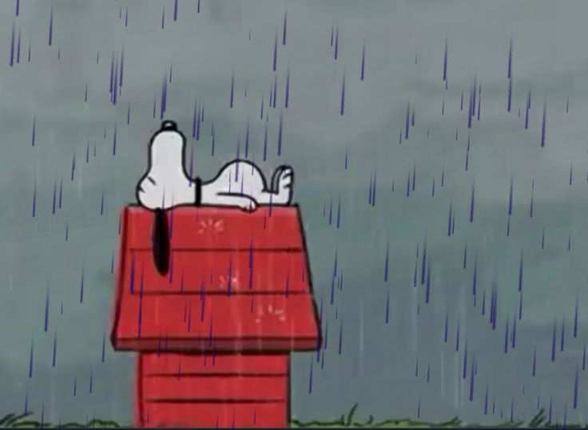

Para Naomy.
Toca la pantalla
Naomy, soy yo…otra vez

.....
Desde que ya no estás en mi vida, los días se sienten más largos, más fríos, más vacíos. Me levanto y por un segundo olvido que te perdí… pero luego llega el golpe, ese que no se ve, ese que duele más que cualquier otro. Porque no solo terminó lo nuestro, terminó la versión de mí que era feliz contigo.
Lo que más me duele no es solo que te hayas ido, sino saber que nunca pude mostrarte todo el amor que estaba listo para darte. Lo guardé. Lo callé. Lo apagué por miedo, por orgullo, por escuchar voces que nunca supieron amar como tú lo hacías. Y hoy cargo con eso todos los días.
Con mis actitudes te fui empujando lejos, sin darme cuenta, sin entender que cada silencio mío era una herida más para ti. Reaccioné cuando ya no estabas, cuando ya era demasiado tarde, cuando tu ausencia se volvió permanente.
Fuiste la casualidad más bonito que me pasó en la vida, y perderte es algo que no voy a superar del todo. Siempre vas a vivir en mí, en un lugar al que nadie más va a poder entrar. Porque nadie más logró lo que tú hiciste: devolverme la vida cuando yo ya no creía en nada, enseñarme a sonreír otra vez, hacer que despertar cada mañana tuviera sentido solo por saber que existías.
Fuiste ese sentimiento que no se puede explicar, que no cabe en palabras, que no se escribe sin que tiemble el alma. Fuiste mi “hogar” en una persona. Y ahora me toca aprender a vivir sin casa.
Sé que vas a triunfar, porque tienes una luz que no se apaga, una esencia que no pasa desapercibida. Y aunque no sea a mi lado, deseo con todo mi corazón que seas feliz… incluso si eso significa que ya no forme parte de tu historia.
Lo nuestro se quedó suspendido en el tiempo, como algo que pudo ser y no fue. Solo Dios sabrá si algún día nuestros caminos se vuelven a cruzar. Y si eso pasa, prometo no volver a cometer los errores que te perdieron. Pero si no… entonces esta es mi forma de dejarte ir, aunque me duela más de lo que puedo admitir.
Quisiera que me des una última oportunidad; demostrarte que de verdad llegó tu momento de amar sin miedo sin preocupaciones, sin miedos, demostrarte ese amor sincero si existe, erre dejándome inundar de inseguridades, voces provenientes de personas que cargan con pesadez en sus corazones que no saben amar de verdad, inconscientemente pensé que no te iba a perder y al saber que ya lo hice toda esa felicidad que se formó de la nada se derrumbó.
Siempre voy a estar aquí para ti, aunque tú ya no estés para mí.
Adiós, mi niña bonita.
(Espero entiendas que, romperse, mostrarse vulnerable y más no es por debilidad es por que de verdad se siente y pesa demasiado)